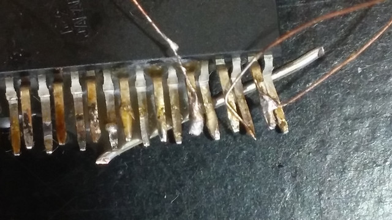

As mentioned in Ghettobotics Nonshopping List I measured the individual copper conductors in a stranded power cable as 100 μm, a distance usually described as “the width of a human hair” — my beard is human, perhaps, but apparently not my head. I thought I’d work out a little bit about the properties of 100-μm wiring.
This would be 38-gauge wire on the AWG scale, and it should be about 2.2Ω per meter. (This may be correct, but I’m not able to measure it with much accuracy. My meter measures a short circuit as 0.8Ω and a 150-mm length of this wire as 2.8Ω. At least it doesn’t say 10Ω.) So, for circuits with diameters in the millimeters with impedances in the kilohms, this wire is perfectly adequate for carrying voltages around.
If it’s carrying 100 mA it should drop 0.22 V/m, or 0.22 mV/mm, and dissipate 22 mW/m, or 22 μW/mm. So you might want to use multiple strands for your ECL chips’ VCC and GND pins, or for your precision analog supplies.
So perhaps you can prototype a circuit by gluing a bunch of SMD components to a piece of paper or wood, a millimeter or two apart, then soldering this hair wire to their terminals, all under a microscope. You should only need a few micrograms of solder per joint, and melting that solder shouldn’t require much heat. The hair wire doesn’t come insulated, but at centimeter scales it’s sufficiently rigid and elastic that it won’t easily produce accidental shorts on the workbench from vibration or other random forces; nevertheless you might want to do some conformal coating with nail polish or lacquer or something before sending your little circuit out into the big, scary world. In some cases you might even pot it.
A spot welder might be more appropriate equipment than a traditional iron that relies on thermal conduction. Thermal conduction is necessarily fairly slow, so if you’re soldering onto a large thermally-conductive mass, you need to heat the whole thing up, not just the solder for the connection. This increases the energy needed by orders of magnitude. Still, a regular soldering iron does work.
Non-surface-mount components, as well as BGAs and the like, can perhaps be handled by dead-bugging them, gluing them with their legs in the air.
Here’s a photo of three such wires soldered to three of the pins of a through-hole SZIP, taken with my hand computer’s built-in camera, which I used for the soldering as well:
